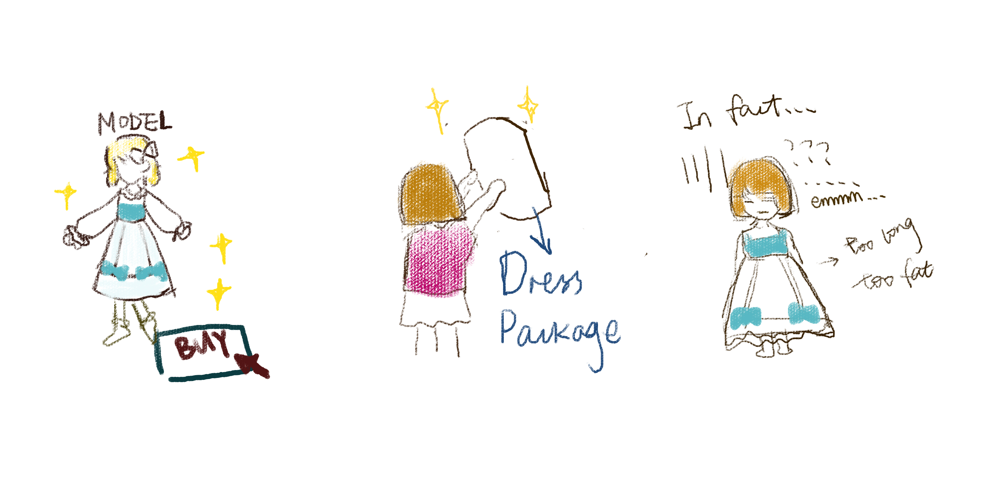
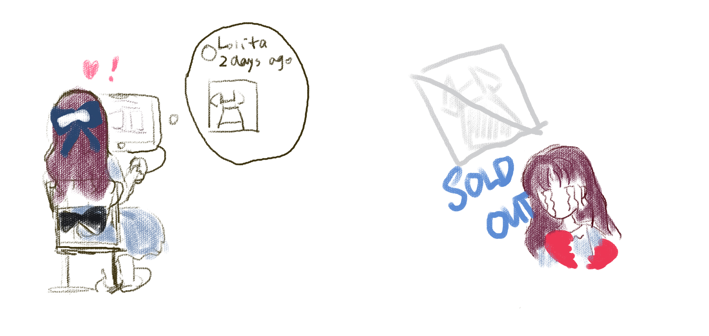
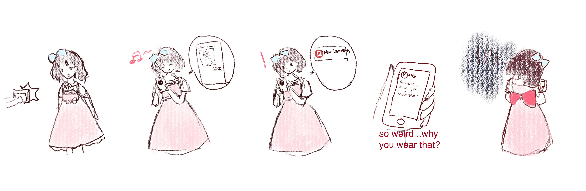
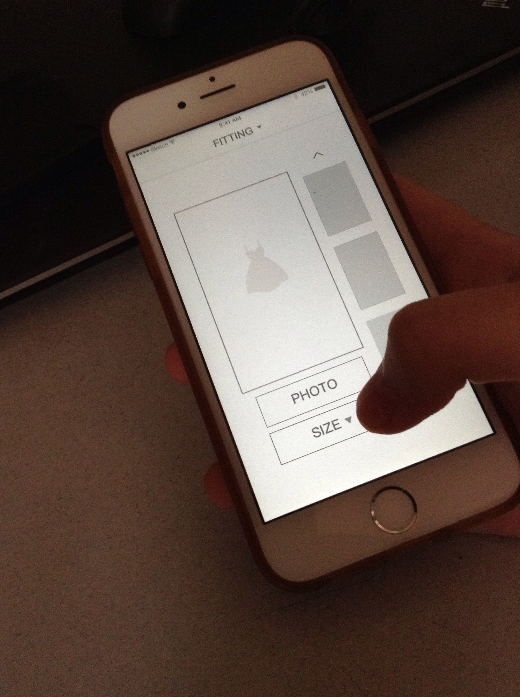
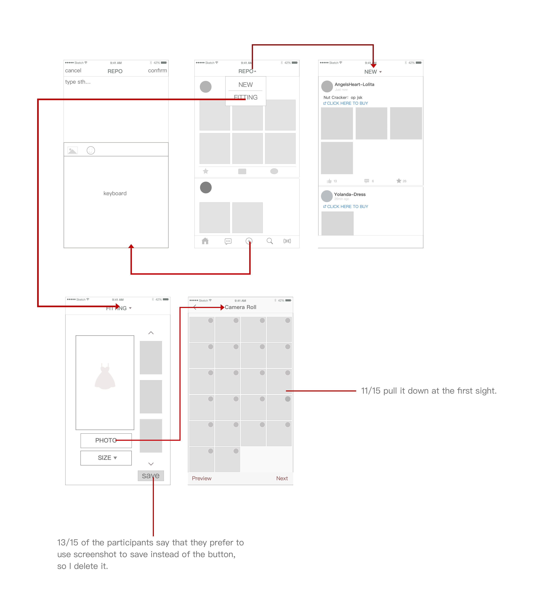

PROBLEM
Lolita Fashion is a kind of dressing style which is become more and more popular, but it is also a style that not all of the others can accept. Many girls have receive some bad comments after they post their pictures of wearing lolita on weibo or some other social software. I have heard many girls around worried about whether to share their pictures to the person who like this style because they may be criticalized by someone who do not understand.Also, the dresses are often sold online which means you cannot try before you buy.
TARGET GROUP
Girls even boys who like lolita fashion need a place for them to communicate with person who has the same interests.
RESEARCH
| SITUATION 1 | SITUATION 2 |
|  |  |
The dress was not what you imagined |
Always miss the information. |
| SITUATION 3 | |
|  | |
Receive some negative comments. |
|
INTERVIEW RESULTS
| Negative comments? | How do you get the information? | Always buy you want? |
|---|---|---|
|
“Some of the comments are not kind. But I am still lucky that my friends who haven’t heard lolita fashion don’t say bad words.” “I don’t post photos much, because I am afraid that somenody may think I’m weird. I have seen comments like that under other’s pictures.” “Someone wrote a comment to say that I dress this type of dress to pretend to be a princess...umm that’s too ridiculous, I mean, he even didn’t me and lolita fashion, I don’t know why he said that. ” “I once put my photos on QQ zone, and a girl who just only heard about lolita said: ‘oh you have lolita dresses! you must be rich!’. That makes me really uncomfortable,I am just an ordinary student, not all the lolita dresses are so expensive as what they have imagined.” “I haven’t received bad comments...maybe it’s because I don’t have many followers.I only post my pictures when I want to make a reference to someone who buy the dress as well.So I think not too many people will see my photos.” |
“I follow the shop owners on weibo, but there are to many shops and sometimes weibo becomes the owner of these shops. But I also follow other person and I want to know other information.” “It is really unconvenient for me to check the information about the dresses on weibo or bbs, I have followed many people and I can always miss the information about lolita fashion.” “I often read the news on Taobao, it may need some luck to buy what you want because some dress number is limited,you can buy it only if you buy it immediately.” “I don’t buy much so I just buy what I see on weibo or Taobao if I like it at the same time. Maybe there will be a dress that I like it so much that I must buy it, but now I haven’t met one yet.” “As for Taobao...I have close its notice function because of too much advertisements. So I always missed what I want to buy. ” |
“I am always attracted by the models in the beautiful dresses, they are slim, pretty, and when I try it on, it turns out that the dress does not fit me well..” “Some dresses on the model seem really common, but after you saw some reposts, you just like it a lot but you didn’t buy. It’s like gamble in some ways.” “How can I know what I look like before I buy it? you know, the dresses are always sold online. Only by imagination cannot get great dresses all the time.” “I always be careful about buy dresses, before I buy it, I should know the size, the detail, and consider how to match the dress, it’s a long time.” “I have bought a dress which was really big but I actually buy it based on my size, that’s really disappointing.” |
| What about shop owners? | ||
|
“Weibo always ‘EATS’ our message... We have to pay to spread the information and let our followers see.” “We don’t want to send too many messages as well but we have to test whether our customers can see, sometimes it will bother them, but we don’t have other choices.” |
CORE NEED
- A circle for person with the same interests of lolita fashion.
- A place where users can quickly find the new dresses without irrelevant information.
- A room for users to try what they want to buy to make sure it fits.
|
LOW FIDELITY PROTOTYPE & TEST 3 MAIN PARTS
By REPO, you can share what dresses you wear with other lolita girls, you can also see the dress up of other persons, and to know more details about the dresses. NEW is a place where you can check the update of the dresses, without useless information,you can quickly find what do you want. The fitting room uses VR technology. You just need to choose a photo of yourself and then you will simply get the clothes of the size which you select on your body. |
 |
MAIN FLOW

CONCLUSION
LOLITALK is an app for all the persons who like lolita fashion.In this app, you will not hear any negative words from who don’t know about the style, you can see how others persons match with different dresses, you can communicate with people who has the same interests with you, you can try the dress on by VR before you get it. The information about lolita f ashion will be collected by the engineer and put them in NEW molecular. With no advertisement, no irrelevant information, you can read the information briefly and quickly. In LOLITALK, you can get all about lolita.